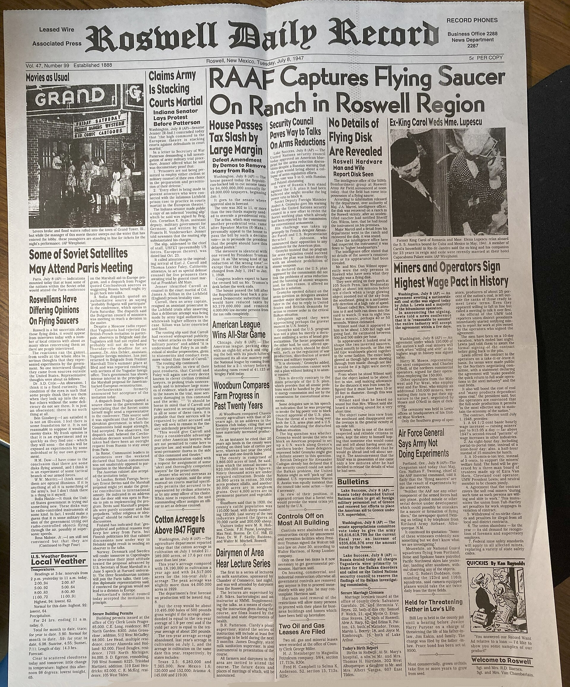

ロズウェル事件
別名: Roswell UFO incident
1947年、米軍が「空飛ぶ円盤を回収した」と発表し、翌日に撤回した事件。UFO史上もっとも有名な出来事であり、政府の公式説明は30年以上を経て二度変更された。

1947年7月8日、ニューメキシコ州ロズウェル陸軍飛行場が異例の報道発表を行った。近郊の牧場で「空飛ぶ円盤を回収した」という内容だった。地元紙は一面で報じた。
翌日の撤回
ところが翌日、上級司令部が発表を訂正した。回収されたのは気象観測用の気球であり、円盤ではないという内容で、報道陣の前に破れたゴムと金属箔、木材が並べられた。この時点で事件はいったん忘れられた。
30年後の再燃
1978年、当時現場に立ち会った元将校が「あれは気球ではなかった」と語ったことから、事件は再び注目を集めた。1980年代以降、宇宙人の遺体が回収されたという証言や、解剖映像を称するフィルムが次々に現れた。そのほとんどは後に捏造と判明している。
米空軍による2度の説明
確認されていること：米空軍は1994年、機密解除にもとづく報告書を公表した（米軍のUFO調査記録は米国立公文書館に所蔵されている）。回収物は「プロジェクト・モーグル」という極秘計画の観測気球だったと説明されている。ソ連の核実験を音波で探知するため、高高度に長い連結気球を飛ばす計画で、当時は存在自体が機密だった。
1997年には続報が出され、「宇宙人の遺体」の証言については、当時行われていた人体模型（ダミー人形）の落下実験の記憶が混同されたものだという説明がなされた。ただしこの実験は事件の数年後に行われており、時期が合わないという批判がある。
1997年には続報が出され、「宇宙人の遺体」の証言については、当時行われていた人体模型（ダミー人形）の落下実験の記憶が混同されたものだという説明がなされた。ただしこの実験は事件の数年後に行われており、時期が合わないという批判がある。
なぜここまで大きくなったのか
ロズウェルが特別なのは、軍が一度「円盤」と発表してしまった点にある。撤回があったこと、そして実際に機密計画が存在したことが確認されたことで、「政府は何かを隠していた」という枠組みが事実として成立してしまった。
隠されていた中身が気球であっても、隠されていたこと自体は本当だった。この構造が、後のあらゆるUFO陰謀論の原型になった。
いまの街
ロズウェルには国際UFO博物館があり、毎年7月にフェスティバルが開かれる。人口5万人ほどの街の主要産業のひとつになっている。
出典・参考
- 米国立公文書館「Project BLUE BOOK — 未確認飛行物体」米軍のUFO調査記録の所蔵案内
- ロズウェル事件（日本語版ウィキペディア）経緯の概観
関連する項目
 心霊・幽霊屋敷アミティヴィルの恐怖一家が28日で逃げ出したとされる家。ベストセラーと映画で世界に広まったが、事件を担当した弁護士が「話は作り物だった」と証言している。
心霊・幽霊屋敷アミティヴィルの恐怖一家が28日で逃げ出したとされる家。ベストセラーと映画で世界に広まったが、事件を担当した弁護士が「話は作り物だった」と証言している。 UFO・UAPエリア51ネバダ州の砂漠にある米空軍の秘密施設。存在自体が長く否定されていたが、2013年に機密解除文書で公式に認められた。UFO伝説の中心地。
UFO・UAPエリア51ネバダ州の砂漠にある米空軍の秘密施設。存在自体が長く否定されていたが、2013年に機密解除文書で公式に認められた。UFO伝説の中心地。 UMA・未確認生物ビッグフット北米の森林地帯で目撃される、二足歩行の大型類人猿とされる存在。1967年に撮影された動画が最大の根拠であり、同時に最大の争点でもある。
UMA・未確認生物ビッグフット北米の森林地帯で目撃される、二足歩行の大型類人猿とされる存在。1967年に撮影された動画が最大の根拠であり、同時に最大の争点でもある。 UMA・未確認生物モスマン1966年から67年にかけて米国ウェストバージニア州で目撃された、赤く光る目を持つ有翼の人型。橋の崩落事故と結びつけて語られるようになった。
UMA・未確認生物モスマン1966年から67年にかけて米国ウェストバージニア州で目撃された、赤く光る目を持つ有翼の人型。橋の崩落事故と結びつけて語られるようになった。